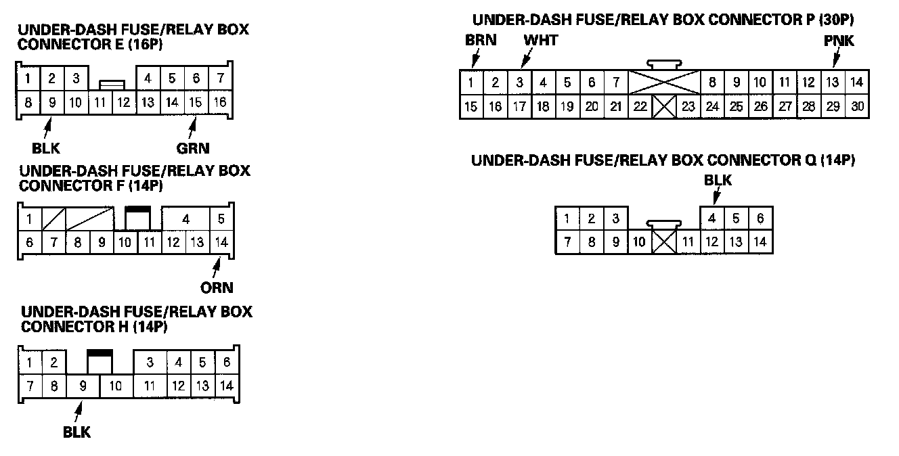
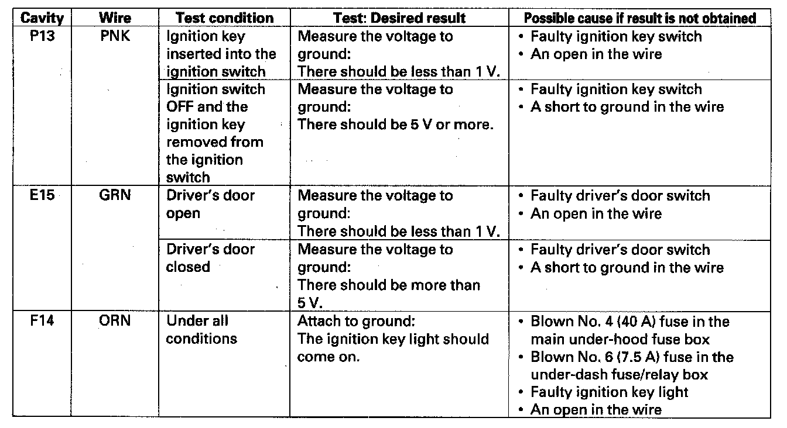

Component Tests and General Diagnostics
Control Unit Input TestNOTE:
- Before testing, troubleshoot the B-CAN System Diagnosis Test Mode A.
- Before testing, troubleshoot the F-CAN System using the gauge control module self-diagnosis function.
MICU (Common Test)
1. Turn the ignition switch OFF, and remove the left kick panel.

2. Disconnect the under-dash fuse/relay box connectors E, H, P and Q.
NOTE: All connector views are wire side of female terminals.
3. Inspect the connector and socket terminals to be sure they are all making good contact.
- If the terminals are bent, loose or corroded, repair them as necessary, and recheck the system.
- If the terminals look OK, go to step 4.
4. Reconnect the connectors, turn the ignition switch ON (II), and make these input tests at the connectors.
- If any test indicates a problem, find and correct the cause, then recheck the system.
- If all the input tests prove OK, go to step 5.
GAUGE CONTROL MODULE (Common Test)
5. Disconnect the gauge control module connectors A (12P) and B (24P).
NOTE: All connector views are wire side of female terminals.
6. Inspect the connector and socket terminals to be sure they are all making good contact.
- If the terminals are bent, loose or corroded, repair them as necessary and recheck the system.
- If the terminals look OK, go to step 7.
7. Reconnect the connectors, turn the ignition switch ON (II), and make these input tests at the connectors.
- If any test indicates a problem, find and correct the cause, then recheck the system.
- If all the input tests prove OK, go to the appropriate input test.
- Key-in reminder, go to step 8.
- Parking brake reminder, go to step 9.
- Lights-on reminder, do the combination switch control unit input test and the combination light switch test.
- Seat belt reminder, do the seat belt buckle switch test.
Key-in reminder

8. Reconnect the under-dash fuse/relay box connectors, turn the ignition switch ON (II), and make these input tests at the connectors.
- If any test indicates a problem, find and correct the cause, then recheck the system.
- If all the input tests prove OK, the MICU must be faulty, replace the under-dash fuse/relay box.
Parking Brake Reminder
9. Reconnect the gauge control module connectors, turn the ignition switch ON (II), and make these input tests at the connector.
- If any test indicates a problem, find and correct the cause, then recheck the system.
- If all the input tests prove OK, replace the gauge control module.